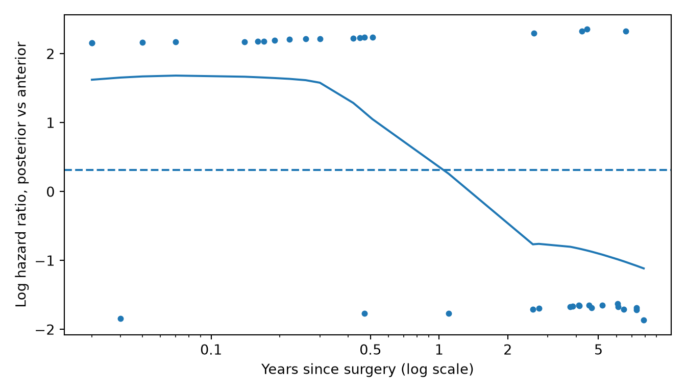

Hazard ratios, choix des covariables, modèles de Cox univariés et multivariés, vérification des effets en ligne droite et des risques proportionnels, solutions, régression de Cox stratifiée pour les ensembles appariés et les patients bilatéraux, régression de Fine-Gray et rédaction des résultats.
La page 13 a comparé des courbes de survie. La régression de Cox va plus loin : elle donne à chaque groupe ou prédicteur un hazard ratio avec un intervalle de confiance (IC) à 95 %, et elle peut ajuster sur plusieurs prédicteurs à la fois. Les pages 8, 11 et 12 ont chacune ajusté un modèle de Cox en quelques étapes. Cette page couvre toute la démarche : - ce que signifie un hazard ratio - comment choisir les covariables - comment vérifier les conditions d’application du modèle, et que faire quand l’une d’elles n’est pas remplie - comment traiter les ensembles appariés et les patients opérés des deux côtés - comment modéliser les risques concurrents - comment rédiger le résultat
Note💡 Comment fonctionne cette page
Exécutez les blocs de code dans l’ordre, de haut en bas : les blocs suivants utilisent les packages, les données et les modèles créés plus haut.
Jusqu’à la section sur les patients bilatéraux, les exemples traitent chaque cas comme un patient distinct, y compris les 80 patients opérés des deux côtés. Dans le code, les prothèses s’appellent THA et TKA ; dans le texte, nous disons PTH et PTG.
Le hazard ratio
Le hazard (le risque instantané) est le taux de révision à un moment donné parmi les implants encore en place : la probabilité qu’un implant non révisé soit révisé dans le court intervalle qui suit. Il peut monter ou baisser au cours du temps. Le hazard ratio (HR) divise le hazard d’un groupe par celui d’un autre. Un modèle de Cox suppose que ce rapport reste le même sur tout le suivi, même si les hazards eux-mêmes changent : les hazards sont proportionnels (d’où le nom de la méthode, régression à « risques proportionnels »).
Voici le modèle de Cox pour l’implant seul, avec l’implant A comme référence :
print(implant_model.concordance_index_) # indice de concordance
0.6591952831027229
print(implant_model.log_likelihood_ratio_test().test_statistic) # test global du rapport de vraisemblance
27.63546691821921
Lecture du résultat, ligne par ligne : - n = 600, number of events = 81 : les interventions et les révisions. Ce sont les révisions, et non les interventions, qui fixent ce qu’un modèle de Cox peut apprendre. - coef : le logarithme du hazard ratio. Personne ne le rapporte ; c’est ce que le modèle estime. - exp(coef) : le hazard ratio. Implant C : 3.07. À tout moment du suivi, un implant C non révisé était révisé à un taux environ trois fois plus élevé qu’un implant A non révisé. Implant B : 0.82. - se(coef), z, Pr(>|z|) : l’erreur standard du coefficient, et le test de Wald, qui teste si le hazard ratio diffère de 1 (p < 0.001 pour C, p = 0.514 pour B). - lower .95 / upper .95 : l’IC à 95 % de chaque hazard ratio : 1.85 à 5.09 pour C, 0.45 à 1.50 pour B. - Concordance = 0.659 : parmi les paires de patients, la fréquence à laquelle celui qui a été révisé le plus tôt avait le risque prédit le plus élevé. 0.5 correspond à pile ou face et 1 à la perfection. - Likelihood ratio, Wald and score tests : trois versions du test global qui demande si l’implant joue un rôle quelconque. Avec assez d’événements, elles concordent ; le test du rapport de vraisemblance (27.6 sur 2 degrés de liberté, ddl, p < 0.001) est le plus fiable. Python affiche la concordance, puis ce test sous le tableau.
Astuce🔀 R ou Python : convergence et affichage
Les deux programmes traitent les temps de révision ex æquo avec la méthode d’Efron et prennent le premier groupe par ordre alphabétique (A) comme référence. La règle par défaut de lifelines arrête les itérations un peu trop tôt : ses hazard ratios peuvent donc différer de ceux de R au cinquième ou au sixième chiffre. Chaque modèle Python de cette page la resserre avec fit_options={"precision": 1e-12}. summary() de R affiche la concordance et trois tests globaux ; lifelines les range dans concordance_index_ et log_likelihood_ratio_test(). (print_summary() de lifelines montre tout d’un coup, y compris l’heure de l’ajustement du modèle.)
Avertissement⚠️ Attention : un hazard ratio n’est pas un risque relatif
« Trois fois le hazard » ne veut pas dire trois fois plus de révisions à 5 ans. À 5 ans, 28.9 % des genoux et des hanches avec l’implant C avaient été révisés (1 − Kaplan-Meier), contre 10.1 % avec l’implant A : 2.85 fois plus, et non 3.07. Les deux rapports sont proches quand les révisions sont rares et s’éloignent quand elles deviennent fréquentes. Rapportez le hazard ratio comme un rapport de taux, et donnez les risques cumulés séparément.
km_by_implant <-survfit(Surv(followup_years, revised) ~ implant, data = cohort)1-summary(km_by_implant, times =5)$surv # révisés à 5 ans : A, B, C
[1] 0.10143478 0.07591293 0.28862332
for implant, group in cohort.groupby("implant"): implant_km = KaplanMeierFitter().fit(group["followup_years"], group["revised"])print(implant, round(1- implant_km.survival_function_at_times(5).iloc[0], 3)) # révisés à 5 ans
A 0.101
B 0.076
C 0.289
Choisir les covariables
Une étude qui compare des implants a une seule question : l’implant C comporte-t-il un risque de révision plus élevé que l’implant A ? Les autres prédicteurs du modèle sont là pour rendre cette comparaison équitable. Ces covariables sont choisies avant de regarder les résultats, pour une raison que vous pouvez justifier par écrit :
Ajustez sur les facteurs de confusion : les facteurs qui influencent à la fois l’implant que reçoit un patient et son risque de révision. L’âge, le sexe et l’IMC sont les plus courants en arthroplastie : les chirurgiens peuvent choisir les implants différemment pour les patients plus âgés, plus corpulents ou de sexe féminin, et ces facteurs peuvent modifier le risque de révision.
N’ajustez pas sur ce que l’implant cause. Une luxation ou une réopération qui suit le choix de l’implant fait partie de l’effet de l’implant : ce n’est pas un autre facteur qui expliquerait la différence. Ajuster sur cet événement masque l’effet que vous cherchez à mesurer.
Ne choisissez pas les covariables d’après les données. Garder seulement les prédicteurs avec p < 0.2 dans des modèles univariés, ou laisser une procédure pas à pas les choisir, fait paraître les valeurs p et les IC plus certains qu’ils ne le sont et donne des réponses différentes dans chaque échantillon.
Les événements limitent le modèle. Un modèle de Cox demande environ 10 événements par terme, un terme étant un coefficient : un prédicteur à deux niveaux comme le sexe est un terme, l’implant (B et C par rapport à A) en est deux, et une spline à 3 degrés de liberté en est trois. La cohorte d’exercice compte 81 révisions, ce qui suffit pour environ huit termes. L’implant, l’âge, le sexe et l’IMC en utilisent cinq, soit environ 16 événements par terme. Avec moins d’événements, ajustez sur moins de facteurs, et dites-le.
De l’analyse univariée à l’analyse multivariée
Un modèle univarié (ou non ajusté) a un seul prédicteur, comme le modèle de l’implant ci-dessus. Un modèle multivarié (ou ajusté) en a plusieurs ; chaque hazard ratio est alors l’effet de ce prédicteur, les autres étant maintenus constants.
Le hazard ratio de l’implant C est passé de 3.07 non ajusté à 3.19 ajusté (IC à 95 % de 1.92 à 5.29). L’âge, le sexe et l’IMC n’expliquent pas la différence entre les implants. Quand une estimation ajustée bouge beaucoup, les covariables étaient probablement des facteurs de confusion pour l’estimation non ajustée ; dites-le dans la Discussion. Les petits écarts ne signifient pas grand-chose : un hazard ratio bouge un peu dès qu’on ajoute un prédicteur fort, même sans confusion.
Avertissement⚠️ Attention : les hazard ratios des covariables ne sont pas des résultats
Le modèle affiche aussi des hazard ratios pour l’âge, le sexe et l’IMC. Le hazard de révision des hommes était environ la moitié de celui des femmes (0.51, IC à 95 % de 0.32 à 0.81). Il est tentant de le rapporter comme un second résultat, mais le modèle n’a pas été construit pour y répondre : personne n’a choisi de covariables qui rendraient équitable la comparaison des hommes et des femmes. Rapportez les estimations des covariables dans le tableau, et décrivez comme exploratoire toute estimation que vous discutez, comme le fait la page 12.
L’effet est-il une droite ?
Un prédicteur mesuré comme l’âge entre dans le modèle sous forme de droite : chaque augmentation de 10 ans multiplie le hazard par le même facteur, que ce soit de 50 à 60 ans ou de 75 à 85 ans. Pour le vérifier, laissez l’effet se courber avec une spline cubique naturelle (la page 12 explique les splines) et comparez les deux modèles avec un test du rapport de vraisemblance :
library(splines)age_spline_model <-coxph(Surv(followup_years, revised) ~ implant +ns(age, df =3) + sex + bmi_5,data = cohort)anova(adjusted_model, age_spline_model) # test du rapport de vraisemblance : la courbure améliore-t-elle l'ajustement ?
Analysis of Deviance Table
Cox model: response is Surv(followup_years, revised)
Model 1: ~ implant + age_10 + sex + bmi_5
Model 2: ~ implant + ns(age, df = 3) + sex + bmi_5
loglik Chisq Df Pr(>|Chi|)
1 -461.26
2 -461.11 0.2935 2 0.8635
import patsyfrom scipy.stats import chi2age_knots =list(cohort["age"].quantile([1/3, 2/3])) # les mêmes nœuds que ns(df = 3) de Rage_low, age_high = cohort["age"].min(), cohort["age"].max()age_spline = patsy.dmatrix("cr(age, knots=age_knots, lower_bound=age_low, upper_bound=age_high,"" constraints='center') - 1", cohort, return_type="dataframe")age_spline.columns = ["age_1", "age_2", "age_3"] # trois termes de splinespline_data = pd.concat([cox_data.drop(columns="age_10"), age_spline], axis=1)age_spline_model = CoxPHFitter().fit(spline_data, duration_col="followup_years", event_col="revised", formula="implant + age_1 + age_2 + age_3 + sex + bmi_5", fit_options={"precision": 1e-12})lr_stat =2* (age_spline_model.log_likelihood_ - adjusted_model.log_likelihood_)print(lr_stat, chi2.sf(lr_stat, df=2)) # test du rapport de vraisemblance : 3 termes de spline contre 1 droite
0.29350381805818415 0.8635081794270494
La spline n’a pas clairement amélioré l’ajustement (χ² = 0.29, ddl = 2, p = 0.864) : la droite pour l’âge est donc conservée. Rapportez la vérification dans les Méthodes. (L’exercice 2 vérifie l’IMC.)
Vérifier les risques proportionnels
Le modèle de Cox suppose que chaque hazard ratio reste le même sur tout le suivi. La vérification classique utilise les résidus de Schoenfeld. À chaque révision, le modèle compare les prédicteurs du patient révisé à ceux de tous les patients encore à risque. Mis à l’échelle et ajouté au coefficient du modèle, chaque résidu estime le logarithme du hazard ratio à ce moment. Si le hazard ratio est constant, ces estimations se dispersent autour d’une droite horizontale ; si elles dérivent avec le temps, la condition n’est pas remplie.
Le hazard ratio d’aucun prédicteur n’a clairement changé au cours du temps (test global p = 0.359 ; l’IMC avait la plus petite valeur p, 0.106). Il n’y a donc pas de preuve claire contre les risques proportionnels, ce qui n’équivaut pas à la preuve qu’ils sont respectés : avec 81 révisions, le test peut passer à côté d’un changement modeste.
Maintenant, une vraie violation. Les données d’exercice en contiennent une : dans les prothèses totales de hanche, la voie postérieure a un taux de révision bien plus élevé dans les premiers mois après l’opération (luxation précoce), et pas de taux plus élevé ensuite. La page 13 a montré les courbes qui se croisent.
chisq df p
approach 11.3 1 0.00078
GLOBAL 11.3 1 0.00078
plot(approach_zph, resid =TRUE, se =TRUE) # le logarithme du hazard ratio au cours du tempsabline(h =coef(approach_model), lty =2) # le hazard ratio unique que suppose le modèle
test_statistic p
approach[T.posterior] 11.183262 0.000825
# résidus de Schoenfeld mis à l'échelle, un par révision ; en ajoutant le coefficient, on obtient le logarithme du hazard ratio au cours du tempsresiduals = approach_model.compute_residuals(tha_data, kind="scaled_schoenfeld")log_hr = residuals["approach[T.posterior]"] + approach_model.params_["approach[T.posterior]"]years = tha_data.loc[log_hr.index, "followup_years"]fig, ax = plt.subplots(figsize=(7, 4))ax.scatter(years, log_hr, s=12)trend = lowess(log_hr, np.log(years), frac=2/3, it=0) # courbe lissée ; it=0 donne à chaque point son plein poidsax.plot(np.exp(trend[:, 0]), trend[:, 1])ax.axhline(approach_model.params_["approach[T.posterior]"], linestyle="--") # le hazard ratio unique que suppose le modèleax.set_xscale("log") # étale les révisions précocesax.set_xticks([0.1, 0.5, 1, 2, 5], labels=["0.1", "0.5", "1", "2", "5"])ax.set_xlabel("Years since surgery (log scale)")ax.set_ylabel("Log hazard ratio, posterior vs anterior")plt.tight_layout()plt.show()

Le test : p < 0.001 (χ² de R = 11.3 sur 1 ddl). Le hazard ratio de la voie postérieure n’est pas constant.
Les points : un par révision. Les points proches de +2 sont des hanches opérées par voie postérieure et ceux proches de −2 des hanches opérées par voie antérieure : au début, presque tous les points sont donc en haut.
La ligne continue lisse les points en une estimation du logarithme du hazard ratio à chaque instant. Elle commence en haut dans les premiers mois, quand les hanches opérées par voie postérieure étaient bien plus souvent révisées, puis passe sous la ligne pointillée, qui marque le hazard ratio unique du modèle, 1.37 (logarithme du hazard ratio 0.31).
Ce hazard ratio unique (1.37, IC à 95 % de 0.72 à 2.61) mélange un grand effet précoce et les années suivantes, où il n’y a pas de différence claire. Il ne décrit aucun moment réel du suivi : ne le rapportez donc pas.
Avertissement⚠️ Attention : testez et regardez
Avec beaucoup d’événements, le test signale des changements trop petits pour compter ; avec peu, il manque de vrais changements. Regardez toujours aussi le graphique. Et rapportez un test non significatif comme « pas de preuve claire que les hazard ratios ont changé au cours du temps », jamais comme la preuve que la condition est remplie.
Astuce🔀 R ou Python : deux versions du test
cox.zph() de R (survival 3.0 et suivants) calcule le test du score complet, un par prédicteur, les deux termes de l’implant étant testés ensemble. proportional_hazard_test() de lifelines utilise l’approximation originale, plus simple, de Grambsch et Therneau et teste chaque colonne séparément (l’implant B et l’implant C ont chacun leur propre ligne). Les statistiques diffèrent légèrement (11.3 dans R, 11.2 dans Python pour la voie d’abord) et mènent ici aux mêmes conclusions. Les résidus de Schoenfeld mis à l’échelle de lifelines omettent le coefficient que R ajoute : le code Python le rajoute donc. Le graphique de R espace les révisions régulièrement sur l’axe du temps (son échelle « km ») ; le graphique Python utilise une échelle logarithmique pour la même raison : éviter que les nombreuses révisions précoces ne s’entassent près de zéro.
Quand les risques ne sont pas proportionnels
Il y a deux solutions courantes. Le bon choix dépend de la nécessité ou non d’obtenir le hazard ratio du prédicteur qui ne respecte pas la condition.
1. Stratifier, quand ce n’est qu’un ajustement. Supposons que la question porte sur l’implant, dans les prothèses totales de hanche, et que la voie d’abord ne soit qu’une covariable. Un modèle de Cox stratifié par voie d’abord donne à chaque voie son propre hazard de base, de forme quelconque, et estime les hazard ratios de l’implant au sein de chaque voie. La voie d’abord n’a pas de hazard ratio propre : son effet non proportionnel n’a donc plus d’importance.
Dans les prothèses totales de hanche, avec la voie d’abord comme strate, le hazard ratio de l’implant C était de 2.11 (IC à 95 % de 1.02 à 4.40) par rapport à l’implant A.
2. Découper le suivi, quand vous avez besoin de l’effet. Si la voie d’abord est la question, donnez-lui un hazard ratio pour les 6 premiers mois et un autre pour la période suivante. Chaque patient suivi au-delà de 6 mois reçoit deux lignes, une par période ; le modèle estime alors l’effet de la voie d’abord séparément dans chacune :
# une ligne par patient et par période : (0, 0.5] ans et (0.5, fin du suivi]tha_split <-survSplit(Surv(followup_years, revised) ~ ., data = tha, cut =0.5, episode ="period") |>mutate(posterior_early =as.numeric(approach =="posterior"& period ==1),posterior_late =as.numeric(approach =="posterior"& period ==2))split_model <-coxph(Surv(tstart, followup_years, revised) ~ posterior_early + posterior_late,data = tha_split)summary(split_model)$conf.int
Pendant les 6 premiers mois, le hazard de révision était 8.47 fois plus élevé après la voie postérieure (IC à 95 % de 1.93 à 37.3). Après 6 mois, l’estimation était de 0.43 (IC à 95 % de 0.16 à 1.16), ce qui est imprécis. L’IC de l’effet précoce est large parce qu’il repose sur 16 révisions précoces.
Choisissez le point de coupure avant de regarder, d’après un raisonnement clinique : ici, la période de risque de luxation le plus élevé après une prothèse de hanche. Essayer plusieurs points de coupure jusqu’à ce que l’un donne un résultat spectaculaire, c’est de la pêche aux données (data dredging). R peut aussi laisser un hazard ratio changer progressivement avec le temps (l’argument tt() de coxph()), ce qui évite de choisir un point de coupure.
Methods: Proportional hazards were checked with scaled Schoenfeld residuals. Because the effect of surgical approach changed over time, its hazard ratio was estimated separately for the first 6 months after surgery and thereafter.
Results: The hazard ratio for revision with the posterior approach compared with the anterior approach was 8.47 (95% CI 1.93 to 37.3) in the first 6 months and 0.43 (95% CI 0.16 to 1.16) after 6 months.
Cox stratifié : ensembles appariés et patients bilatéraux
Un modèle de Cox suppose que chaque ligne est un patient indépendant. Deux plans d’étude courants rompent cette condition.
Ensembles appariés. Quand chaque patient avec l’implant C est apparié à des patients semblables qui ont reçu d’autres implants, les patients appariés forment un ensemble. Un modèle de Cox stratifié par ensemble apparié, strata(set_id), ne compare les implants qu’au sein des ensembles. Le tableau de décision l’appelle régression conditionnelle à risques proportionnels. La page 7 traite des paires appariées et la page 9 des ensembles appariés de trois.
Patients bilatéraux. 80 patients de la cohorte ont eu une prothèse des deux côtés. Leurs deux articulations partagent l’os, l’activité et le chirurgien du même patient : leurs résultats ne sont donc pas indépendants, et les traiter comme indépendants rend les IC trop étroits. Il y a trois choix courants :
Garder les deux articulations et utiliser des erreurs standard robustes en grappes sur le patient. Les hazard ratios ne changent pas ; les IC tiennent compte de l’appariement. C’est le choix habituel.
Stratifier par patient, strata(patient_id), pour comparer les deux côtés de chaque patient. Seuls les patients dont les deux articulations diffèrent par le prédicteur, et qui ont eu une révision, apportent quelque chose : c’est donc rarement assez précis.
Garder une articulation par patient, par exemple la première opérée. Simple, mais cela fait perdre des données.
exp(coef) : inchangé : le hazard ratio de l’implant C est toujours de 3.19.
se(coef) / robust se : R affiche les deux ; lifelines n’affiche que l’erreur robuste quand vous demandez des erreurs en grappes. Ici elles sont presque identiques (0.259 et 0.258 pour l’implant C), si bien que l’IC bouge à peine (1.92 à 5.28). Seuls 20 des 80 patients bilatéraux ont eu une révision : l’appariement compte donc peu dans cette cohorte. Il peut compter bien plus dans la vôtre : vérifiez, et dites dans les Méthodes ce que vous avez fait.
Astuce🔀 R ou Python : erreurs standard robustes
Les deux programmes calculent les mêmes erreurs standard robustes (« en sandwich »). Quand des temps de suivi sont ex æquo, R applique aussi la correction d’Efron des ex æquo dans la variance robuste et lifelines ne le fait pas : les deux diffèrent donc au quatrième chiffre significatif.
Régression à risques concurrents : Fine-Gray (R seulement)
Tous les modèles de Cox ci-dessus ont traité le décès comme une censure. C’est un modèle de Cox spécifique à la cause (cause-specific) : ses hazard ratios décrivent le taux de révision parmi les patients encore en vie, ce qui est la bonne question pour savoir si un implant a de moins bons résultats. Mais comme l’a montré la page 13, les décès empêchent aussi des révisions d’avoir jamais lieu. Pour « quels patients seront réellement révisés ? », utilisez le modèle de Fine-Gray, qui modélise directement l’incidence cumulée de la révision. Ses tailles d’effet sont des hazard ratios de sous-distribution (subdistribution hazard ratios, SHR).
La régression de Fine-Gray n’a pas d’implémentation mature en Python : cette section n’existe donc que dans R. crr() de tidycmprsk prend le même statut à trois niveaux que l’incidence cumulée de la page 13 :
Comparez-le au modèle spécifique à la cause : - Implant C : SHR 3.09 (IC à 95 % de 1.86 à 5.14), proche du HR spécifique à la cause de 3.19. L’incidence cumulée de décès ne différait pas clairement entre les implants (test de Gray à la page 13) : tenir compte du décès change donc peu. - Âge : SHR 1.07 pour 10 ans (IC à 95 % de 0.86 à 1.33), contre un HR spécifique à la cause de 1.22. Les patients plus âgés sont peut-être révisés à un taux un peu plus élevé tant qu’ils sont en vie, mais davantage d’entre eux décèdent avant de pouvoir être révisés : l’estimation de sous-distribution est donc plus proche de 1. Il n’y a pas de preuve claire que l’âge change le nombre de patients réellement révisés.
Rapportez le modèle spécifique à la cause pour comparer des implants, et le modèle de Fine-Gray quand la question est de savoir combien de patients seront révisés. Beaucoup d’articles rapportent les deux, en précisant lequel est lequel.
crr() ne peut pas tenir compte des patients qui ont eu une prothèse des deux côtés. Si c’est le cas de beaucoup de vos patients, la fonction finegray() de survival prépare les données pour un modèle de Fine-Gray que coxph() peut ajuster avec cluster = patient_id.
Avertissement⚠️ Attention : un hazard ratio de sous-distribution n’est pas un hazard ratio
Le SHR n’a pas de sens simple comme taux : les patients décédés restent dans son groupe « à risque ». Lisez-le seulement comme « incidence cumulée plus haute ou plus basse », et appelez-le hazard ratio de sous-distribution dans le texte et les tableaux.
Rédiger les résultats d’un modèle de Cox
La plupart des articles présentent les modèles de Cox sous forme de tableau : une ligne par prédicteur, avec les hazard ratios univarié et multivarié côte à côte. Les deux colonnes utilisent des erreurs standard robustes en grappes sur le patient (ci-dessus) : leurs IC tiennent donc compte des patients bilatéraux.
library(gtsummary)hr_labels <-list(implant ~"Implant", age_10 ~"Age (per 10 years)", sex ~"Sex", bmi_5 ~"BMI (per 5 kg/m²)")univariable_table <- cohort |>select(followup_years, revised, implant, age_10, sex, bmi_5, patient_id) |>tbl_uvregression(method = coxph, y =Surv(followup_years, revised), exponentiate =TRUE,include =c(implant, age_10, sex, bmi_5),method.args =list(cluster = patient_id), # erreurs standard robustes, en grappes sur le patientlabel = hr_labels, pvalue_fun =label_style_pvalue(digits =3))multivariable_table <- clustered_model |># erreurs standard robustes, pour les patients bilatérauxtbl_regression(exponentiate =TRUE, label = hr_labels, pvalue_fun =label_style_pvalue(digits =3))tbl_merge(list(univariable_table, multivariable_table),tab_spanner =c("**Univariable**", "**Multivariable**"))
Characteristic
Univariable
Multivariable
N
HR
95% CI
p-value
HR
95% CI
p-value
Implant
600
A
—
—
—
—
B
0.82
0.45, 1.49
0.511
0.83
0.45, 1.52
0.546
C
3.07
1.87, 5.04
<0.001
3.19
1.92, 5.28
<0.001
Age (per 10 years)
600
1.25
0.98, 1.58
0.068
1.22
0.96, 1.56
0.101
Sex
600
Female
—
—
—
—
Male
0.54
0.34, 0.86
0.009
0.51
0.32, 0.81
0.005
BMI (per 5 kg/m²)
600
1.05
0.87, 1.28
0.600
1.03
0.84, 1.27
0.771
Abbreviations: CI = Confidence Interval, HR = Hazard Ratio
def hr_with_ci(model):"""Each term's hazard ratio and 95% CI as text, like '3.19 (1.92 to 5.29)'.""" rows = model.summaryreturn (rows["exp(coef)"].map("{:.2f}".format) +" ("+ rows["exp(coef) lower 95%"].map("{:.2f}".format)+" to "+ rows["exp(coef) upper 95%"].map("{:.2f}".format) +")")univariable = []for term in ["implant", "age_10", "sex", "bmi_5"]: one_predictor = CoxPHFitter().fit(cohort[["followup_years", "revised", term, "patient_id"]], duration_col="followup_years", event_col="revised", formula=term, cluster_col="patient_id", # erreurs standard robustes, en grappes sur le patient fit_options={"precision": 1e-12}) univariable.append(hr_with_ci(one_predictor))hr_table = pd.DataFrame({"Univariable HR (95% CI)": pd.concat(univariable),"Multivariable HR (95% CI)": hr_with_ci(clustered_model)}) # erreurs standard robustes, pour les patients bilatérauxprint(hr_table)
Univariable HR (95% CI) Multivariable HR (95% CI)
covariate
implant[T.B] 0.82 (0.45 to 1.49) 0.83 (0.45 to 1.52)
implant[T.C] 3.07 (1.87 to 5.04) 3.19 (1.92 to 5.28)
age_10 1.25 (0.98 to 1.58) 1.22 (0.96 to 1.56)
sex[T.Male] 0.54 (0.34 to 0.86) 0.51 (0.32 to 0.81)
bmi_5 1.05 (0.87 to 1.28) 1.03 (0.84 to 1.27)
Methods: The association between implant and revision for any reason was estimated with Cox proportional hazards regression, with time from surgery as the time scale and implant A as the reference. Age, sex and body mass index were chosen in advance as covariates. Age entered the model as a linear term after a natural cubic spline showed no clear evidence of non-linearity. Proportional hazards were checked with scaled Schoenfeld residuals. In the Cox models, robust standard errors clustered on patient accounted for patients who had both sides replaced. A Fine-Gray model, treating death as a competing risk, was fitted as a sensitivity analysis.
Results: During follow-up, 81 of 600 procedures (13.5%) were revised. After adjustment for age, sex and body mass index, the hazard ratio for revision compared with implant A was 3.19 (95% CI 1.92 to 5.28) for implant C and 0.83 (95% CI 0.45 to 1.52) for implant B (test of proportional hazards, global p = 0.359). With death treated as a competing risk, the subdistribution hazard ratio for implant C was 3.09 (95% CI 1.86 to 5.14).
Avant de soumettre, vérifiez que l’article indique : - le nombre de patients, d’interventions et d’événements - le temps zéro et la définition de l’événement (page 13) - sur quelles covariables l’ajustement a été fait, et pourquoi - comment les prédicteurs continus ont été modélisés, et comment les risques proportionnels ont été vérifiés - comment les patients bilatéraux et les décès ont été traités
Exercices
Les solutions utilisent les packages, les données et les modèles créés dans les sections ci-dessus : exécutez donc d’abord la page depuis le début.
1. Ajustez un modèle de Cox univarié pour la classe ASA (comme nombre, de 1 à 4) et rédigez la phrase de Résultats.
Results: Comparing a natural cubic spline for BMI with a straight line gave a likelihood ratio χ² of 2.64 (df = 2, p = 0.267).
Il n’y a pas de preuve claire que l’effet de l’IMC se courbe : la droite est donc conservée.
3. Les prothèses totales de hanche et de genou ont peut-être des taux de révision de base différents. Refaites le modèle ajusté en le stratifiant par intervention. Le hazard ratio de l’implant C change-t-il ? Rédigez la phrase de Résultats.
Results: In a Cox model stratified by procedure and adjusted for age, sex and BMI, the hazard ratio for revision with implant C compared with implant A was 3.16 (95% CI 1.90 to 5.24); without stratification it was 3.19.